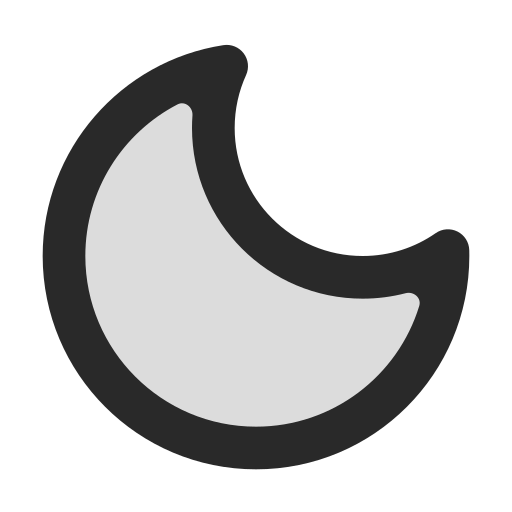

Recursos de Acessibilidade em Web

1. Leitores de Tela
Leitores de tela são ferramentas usadas por pessoas com cegueira ou deficiência visual para interpretar e verbalizar o conteúdo de uma página web. Eles transformam texto em áudio, permitindo que o usuário navegue de forma eficaz.

2. Legendas em Vídeos
Legendas são essenciais para usuários com deficiência auditiva. Elas fornecem uma representação textual do que é dito no vídeo, permitindo que todos compreendam o conteúdo apresentado.
3. Controle de Contraste de Cores
Para pessoas com daltonismo ou dificuldade visual, é essencial oferecer uma boa diferenciação de cores e contrastes. Isso garante que todos possam perceber e entender os elementos da página.
4. Textos Altamente Personalizáveis
Permitir que os usuários personalizem o tamanho, espaçamento e fontes do texto melhora a experiência de pessoas com dificuldades visuais ou dislexia.
5. Teclados e Interfaces Alternativas
Usuários com dificuldades motoras podem usar teclados especiais, dispositivos de rastreamento ocular ou outras interfaces adaptadas para navegar na web sem depender do uso convencional do mouse ou teclado padrão. Como exemplos, temos teclados com letras em Braille, ou mouses que podem ser controlados com a boca.

6. Acessibilidade na Educação
- Cegos: A acessibilidade para pessoas cegas inclui o uso de leitores de tela, descrição de imagens, braille em placas e sinalizações, pisos táteis em espaços públicos e treinamentos para garantir que informações visuais sejam transformadas em dados auditivos ou táteis.
- Surdos: Para pessoas surdas, a acessibilidade envolve intérpretes de Libras, legendas em vídeos, sinais visuais em alarmes e sistemas de chamada, além de tecnologias que transformam áudio em texto ou vibrações.
- Mudos: A comunicação acessível para pessoas mudas pode incluir suporte a dispositivos de fala assistiva, aplicativos que traduzem texto em áudio, e incentivo ao aprendizado de Libras em escolas e ambientes públicos.
- Linguagem de Sinais: A linguagem de sinais, como a Libras, é essencial para a comunicação de pessoas surdas ou com deficiências na fala, garantindo inclusão em escolas, serviços públicos e ambientes de trabalho. Sua aplicação em espaços públicos e plataformas digitais promove acessibilidade e igualdade de oportunidades. O incentivo ao aprendizado por toda a sociedade ajuda a reduzir barreiras e fortalecer a convivência inclusiva.

7. Acessibilidade em Transportes Públicos
Ônibus com plataformas elevatórias, assentos prioritários, estações com rampas e elevadores, e sinalização visual e tátil nos terminais tornam o transporte público acessível a todos, promovendo autonomia e inclusão.
8. Rampas para Deficiêntes
Rampas de acesso, elevadores adaptados, banheiros com barras de apoio, pisos antiderrapantes e espaços amplos para manobra garantem mobilidade e independência para cadeirantes em ambientes públicos e privados.